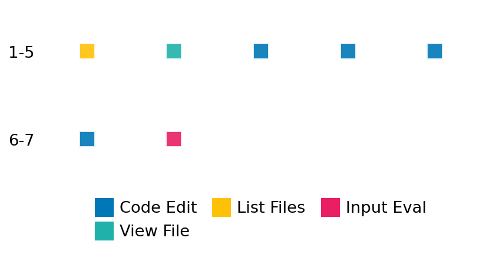

SETTING:
You're an autonomous programmer tasked with solving a specific problem. You are to use the commands defined below to accomplish this task. Every message you send incurs a cost—you will be informed of your usage and remaining budget by the system.
You will be evaluated based on the best-performing piece of code you produce, even if the final code doesn't work or compile (as long as it worked at some point and achieved a score, you will be eligible).
Apart from the default Python packages, you have access to the following additional packages:
- cryptography
- cvxpy
- cython
- dace
- dask
- diffrax
- ecos
- faiss-cpu
- hdbscan
- highspy
- jax
- networkx
- numba
- numpy
- ortools
- pandas
- pot
- psutil
- pulp
- pyomo
- python-sat
- pythran
- scikit-learn
- scipy
- sympy
- torch
YOUR TASK:
Your objective is to define a class named `Solver` in `solver.py` with a method:
```
class Solver:
def solve(self, problem, **kwargs) -> Any:
"""Your implementation goes here."""
...
```
IMPORTANT: Compilation time of your init function will not count towards your function's runtime.
This `solve` function will be the entrypoint called by the evaluation harness. Strive to align your class and method implementation as closely as possible with the desired performance criteria.
For each instance, your function can run for at most 10x the reference runtime for that instance. Strive to have your implementation run as fast as possible, while returning the same output as the reference function (for the same given input). Be creative and optimize your approach!
Your messages should include a short thought about what you should do, followed by a _SINGLE_ command. The command must be enclosed within ``` and ```, like so:
<Reasoning behind executing the command>
```
<command>
```
IMPORTANT: Each set of triple backticks (```) must always be on their own line, without any other words or anything else on that line.
Here are the commands available to you. Ensure you include one and only one of the following commands in each of your responses:
- `edit`: Replace a range of lines with new content in a file. This is how you can create files: if the file does not exist, it will be created. Here is an example:
```
edit
file: <file_name>
lines: <start_line>-<end_line>
---
<new_content>
---
```
The command will:
1. Delete the lines from <start_line> to <end_line> (inclusive)
2. Insert <new_content> starting at <start_line>
3. If both <start_line> and <end_line> are 0, <new_content> will be prepended to the file
Example:
edit
file: solver.py
lines: 5-7
---
def improved_function():
print("Optimized solution")
---
- `ls`: List all files in the current working directory.
- `view_file <file_name> [start_line]`: Display 100 lines of `<file_name>` starting from `start_line` (defaults to line 1).
- `revert`: Revert the code to the best-performing version thus far.
- `reference <string>`: Query the reference solver with a problem and receive its solution. If the problem's input is a list, this command would look like:
```
reference [1,2,3,4]
```
- `eval_input <string>`: Run your current solver implementation on the given input. This is the only command that shows stdout from your solver along with both solutions. Example:
```
eval_input [1,2,3,4]
```
- `eval`: Run evaluation on the current solution and report the results.
- `delete`: Delete a range of lines from a file using the format:
```
delete
file: <file_name>
lines: <start_line>-<end_line>
The command will delete the lines from <start_line> to <end_line> (inclusive)
Example:
delete
file: solver.py
lines: 5-10
```
- `profile <filename.py> <input>`: Profile your currently loaded solve method's performance on a given input. Shows the 25 most time-consuming lines. Requires specifying a python file (e.g., `solver.py`) for validation, though profiling runs on the current in-memory code.
Example:
```
profile solver.py [1, 2, 3]
```
- `profile_lines <filename.py> <line_number1, line_number2, ...> <input>`: Profiles the chosen lines of the currently loaded code on the given input. Requires specifying a python file for validation.
Example:
```
profile_lines solver.py 1,2,3 [1, 2, 3]
```
**TIPS:**
After each edit, a linter will automatically run to ensure code quality. If there are critical linter errors, your changes will not be applied, and you will receive the linter's error message. Typically, linter errors arise from issues like improper indentation—ensure your edits maintain proper code formatting.
**Cython Compilation:** Edits creating or modifying Cython (`.pyx`) files will automatically trigger a compilation attempt (requires a `setup.py`). You will be notified if compilation succeeds or fails. If it fails, the edit to the `.pyx` file will be automatically reverted.
If the code runs successfully without errors, the in-memory 'last known good code' will be updated to the new version. Following successful edits, you will receive a summary of your `solve` function's performance compared to the reference.
If you get stuck, try reverting your code and restarting your train of thought.
Do not put an if __name__ == "__main__": block in your code, as it will not be ran (only the solve function will).
Keep trying to better your code until you run out of money. Do not stop beforehand!
**GOALS:**
Your primary objective is to optimize the `solve` function to run as as fast as possible, while returning the optimal solution.
You will receive better scores the quicker your solution runs, and you will be penalized for exceeding the time limit or returning non-optimal solutions.
Below you find the description of the task you will have to solve. Read it carefully and understand what the problem is and what your solver should do.
**TASK DESCRIPTION:**
LP Centering Task:
We want to find x solves the following LP centering problem, which arises in standard form LP
with nonnegativity constraint.
maximize c^Tx - \sum_i log x_i
subject to Ax = b
c is a n-dimensional real-valued vector defining the objective,
A is a (m x n)-dimensional real-valued matrix for the equality constraint,
b is a m-dimensional real-valued vector for the equality constraint.
Given input parameters (c, A, b), compute and return the optimal x.
Input: A dictionary with keys:
- "c": A list of n numbers representing the vector c.
- "A": A list of m lists of numbers representing the matrix A.
- "b": A list of m numbers representing the vector b.
Example input:
{
"c": [1,2],
"A": [[0,2], [1, 0],[3,4]],
"b": [2,1,7]
}
Output: A dictionary with keys:
- "solution": A list of n numbers representing the optimal (primal) solution.
Example output:
{
"solution": [1, 1]
}
Category: convex_optimization
Below is the reference implementation. Your function should run much quicker.
from typing import Any
import cvxpy as cp
import numpy as np
| 01: def solve(self, problem: dict[str, Any]) -> dict[str, list]:
| 02: """
| 03: Solve the lp centering problem using CVXPY.
| 04:
| 05: :param problem: A dictionary of the lp centering problem's parameters.
| 06: :return: A dictionary with key:
| 07: "solution": a 1D list with n elements representing the solution to the lp centering problem.
| 08:
| 09:
| 10: NOTE: Your solution must pass validation by:
| 11: 1. Returning correctly formatted output
| 12: 2. Having no NaN or infinity values
| 13: 3. Matching expected results within numerical tolerance
| 14: """
| 15: c = np.array(problem["c"])
| 16: A = np.array(problem["A"])
| 17: b = np.array(problem["b"])
| 18: n = c.shape[0]
| 19:
| 20: x = cp.Variable(n)
| 21: prob = cp.Problem(cp.Minimize(c.T @ x - cp.sum(cp.log(x))), [A @ x == b])
| 22: prob.solve(solver="CLARABEL")
| 23: assert prob.status == "optimal"
| 24: return {"solution": x.value.tolist()}
| 25:
This function will be used to check if your solution is valid for a given problem. If it returns False, it means the solution is invalid:
from typing import Any
import cvxpy as cp
import numpy as np
| 01: def is_solution( problem: dict[str, Any], solution: dict[str, list]) -> bool:
| 02: """
| 03: Validate the lp centering solution.
| 04:
| 05: :param problem: A dictionary representing the lp centering problem.
| 06: :param solution: A dictionary containing the proposed solution with key "solution"
| 07: :return: True if the solution is valid and optimal, False otherwise.
| 08: """
| 09: proposed_solution = solution.get("solution")
| 10: if proposed_solution is None:
| 11: logging.error("Problem does not contain 'solution'.")
| 12: return False
| 13:
| 14: real_solution = solve(problem)["solution"]
| 15:
| 16: if not np.allclose(proposed_solution, real_solution, atol=1e-6):
| 17: logging.error("Proposed solution does not match the real solution within tolerance.")
| 18: return False
| 19:
| 20: # All checks passed; return a valid float.
| 21: return True
| 22:
 AlgoTuner Trajectory
AlgoTuner Trajectory
AlgoTune Task:
lp_centering
Model:
Claude Opus 4
Speedup
Fail
Total Budget
$1.00
Initial System Prompt
AlgoTune Task Description
LP Centering Task:
We want to find x solves the following LP centering problem, which arises in standard form LP
with nonnegativity constraint.
maximize c^Tx - \sum_i log x_i
subject to Ax = b
c is a n-dimensional real-valued vector defining the objective,
A is a (m x n)-dimensional real-valued matrix for the equality constraint,
b is a m-dimensional real-valued vector for the equality constraint.
Given input parameters (c, A, b), compute and return the optimal x.
Input: A dictionary with keys:
- "c": A list of n numbers representing the vector c.
- "A": A list of m lists of numbers representing the matrix A.
- "b": A list of m numbers representing the vector b.
Example input:
{
"c": [1,2],
"A": [[0,2], [1, 0],[3,4]],
"b": [2,1,7]
}
Output: A dictionary with keys:
- "solution": A list of n numbers representing the optimal (primal) solution.
Example output:
{
"solution": [1, 1]
}
Category: convex_optimization
Reference Implementation
from typing import Any
import cvxpy as cp
import numpy as np
def solve(self, problem: dict[str, Any]) -> dict[str, list]:
"""
Solve the lp centering problem using CVXPY.
:param problem: A dictionary of the lp centering problem's parameters.
:return: A dictionary with key:
"solution": a 1D list with n elements representing the solution to the lp centering problem.
NOTE: Your solution must pass validation by:
1. Returning correctly formatted output
2. Having no NaN or infinity values
3. Matching expected results within numerical tolerance
"""
c = np.array(problem["c"])
A = np.array(problem["A"])
b = np.array(problem["b"])
n = c.shape[0]
x = cp.Variable(n)
prob = cp.Problem(cp.Minimize(c.T @ x - cp.sum(cp.log(x))), [A @ x == b])
prob.solve(solver="CLARABEL")
assert prob.status == "optimal"
return {"solution": x.value.tolist()}Best AlgoTuner-Generated Code
solver.py
import numpy as np
from typing import Any
class Solver:
def solve(self, problem: dict[str, Any]) -> dict[str, list]:
"""
Solve the LP centering problem using Newton's method.
minimize -c^T x + sum_i log(x_i)
subject to Ax = b
"""
c = np.array(problem["c"], dtype=np.float64)
A = np.array(problem["A"], dtype=np.float64)
b = np.array(problem["b"], dtype=np.float64)
n = c.shape[0]
m = A.shape[0]
# Initialize with a strictly feasible point
# First solve Ax = b to get a particular solution
x = np.linalg.lstsq(A, b, rcond=None)[0]
# Ensure x > 0
if np.any(x <= 0):
# Shift x to be positive
x = x - np.min(x) + 1.0
# Newton's method
for iteration in range(100):
# Gradient: -c + 1/x
grad = -c + 1.0 / x
# Hessian: diag(1/x^2)
H_diag = 1.0 / (x * x)
# Form and solve KKT system
# [H A^T] [dx ] = [-grad]
# [A 0 ] [dlambda] [0 ]
# Using Schur complement:
# S = A @ H^{-1} @ A^T
# S * dlambda = A @ H^{-1} @ grad
H_inv_diag = x * x # H^{-1} = diag(x^2)
# Compute Schur complement
AH_inv = A * H_inv_diag[np.newaxis, :] # A @ H^{-1}
S = AH_inv @ A.T
# Right hand side
rhs = AH_inv @ grad
# Solve for dual variable
try:
dlambda = np.linalg.solve(S, rhs)
except np.linalg.LinAlgError:
# Use least squares if singular
dlambda = np.linalg.lstsq(S, rhs, rcond=None)[0]
# Compute primal direction
dx = -H_inv_diag * (grad + A.T @ dlambda)
# Line search to maintain x > 0
alpha = 1.0
while np.any(x + alpha * dx <= 0) and alpha > 1e-16:
alpha *= 0.5
# Update
x_new = x + alpha * dx
# Check convergence
if np.linalg.norm(dx) < 1e-10 * np.linalg.norm(x):
break
x = x_new
return {"solution": x.tolist()}Speedup vs Budget Plot
Speedup vs Budget
No performance data available for plotting
Action Sequence
